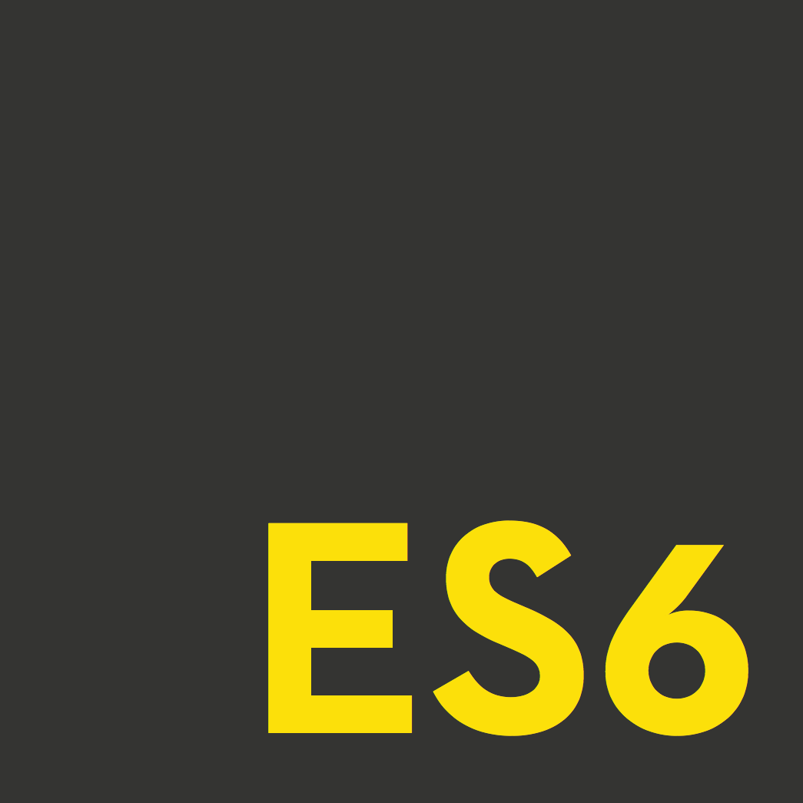
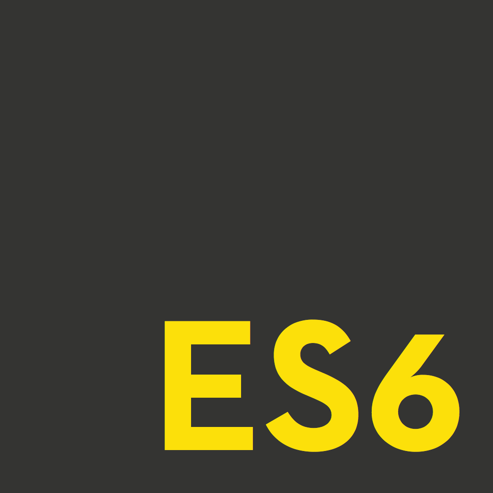

Gregory
Viner
Canada / Mexico (FM3)
gvinercareersatgmail.com / +1 (six47) 873-063six / +52 (two21) 806-230one
linkedin.com/in/guy-viner / guyviner.github.io
RELEVANT EXPERIENCE
UnoZero Code S.A. de C.V. | Mexico (Remote) 2021
Product Manager 


- Internally, managed a team of 6 cross-functional software engineers, striving to respect Agile values, and adhere to Scrum methodologies.
- Externally, conducted full-cycle IT consulting for United States based clients from needs assessment, consultancy, KPIs, to shipping triple-tested code.
- Among others, led the development of VR video games and Progressive Web Apps for clients in multiple industries and with varying use cases.
 Moishe House | United States (Remote) 2017
Moishe House | United States (Remote) 2017
Full Stack Developer 

 
 
- Debugging and development across the entire stack, and technical liaison for company staff.
- Built and implemented multiple interfaces and dynamic web pages to serve the organization’s diverse needs.
- Researched and subsequently migrated the team to Trello from Jira which unlocked efficiencies and elevated development happiness.
 CanDesk | Canada 2013 – 2021
CanDesk | Canada 2013 – 2021
Founder 


- Led the initial mass-adoption of ergonomic standing desks in Canadian homes, offices, and educational institutions.
- Guided by Lean Startup methodologies and influenced by the 4-Hour Workweek, grew the company to 7 full-time equivalent employees, including sales, marketing, logistics, operations, and IT.
- Shipped 4,000+ desks and grew the company’s client database to 2,000+ high-net-worth decision makers.
- Guided by industry best-practices achieved consistent 35%+ open-rates and 10%+ click-through rates on e-mail marketing campaigns, with near-zero unsubscribes.
- Launched the first Canadian brick & mortar standing desk showroom and trial center.
- Launched the first-of-its-kind standing-desk web and mobile companion apps built entirely in-house.
- Launched the first-of-its-kind web & mobile companion app to assist users to track and optimize their use of standing desks.
 Dr. Charlene Zietsma | Canada 2014 – 2015
Dr. Charlene Zietsma | Canada 2014 – 2015
Research Assistant 


- Assisted principal investigator Dr. Charlene Zietsma research the “Challenges and Strategies in Managing Phase-Shifting Growth”.
- Conducted a wide range of research assistance tasks including primary research (data collection, participant recruitment, interviewing, transcribing, coding [NViVo], conferencing) and secondary research (statistical analysis and literature reviews).
 Dr. Marlys Christianson | Canada 2015 – 2016
Dr. Marlys Christianson | Canada 2015 – 2016
Research Assistant
- Assisted Dr. Marlys Christianson study “The emergence and updating of shared understanding in teams during unexpected events”, a SSHRC funded study.
- Conducted a wide range of research assistance tasks including primary research (data collection, participant recruitment, interviewing, transcribing, coding [NViVo], conferencing) and secondary research (statistical analysis and literature reviews).
EDUCATION
Schulich School of Business | Canada 2010
H. BBA
University of Wales | Canada 2015
M. Sc. Finance
 CodeCore Developer Bootcamp | Canada 2016
CodeCore Developer Bootcamp | Canada 2016
Certificate
ABILITIES
- Excellent public speaker and team leader.
- Thorough with a strong attention to detail.
- Creative problem solver and challenger of norms.
- Exceptional researcher and fast learner.
- Deep sense of integrity and confidentiality.
- Fluent in four languages.
PUBLICATIONS